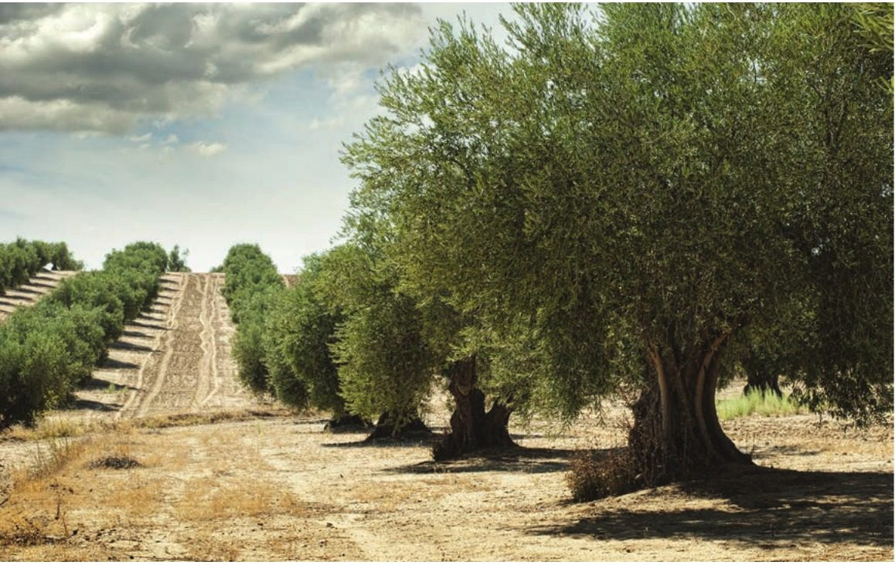
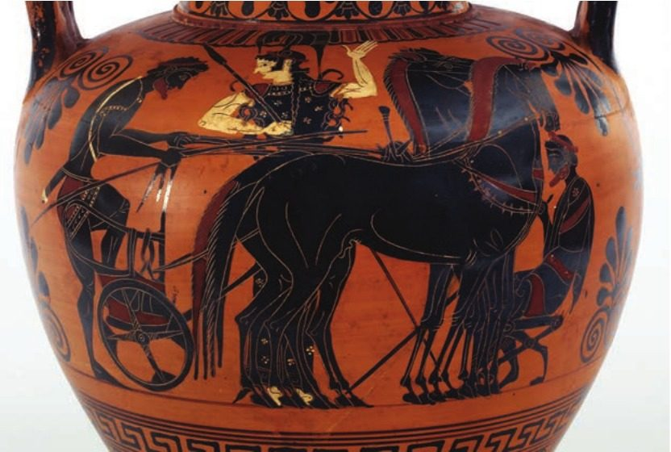
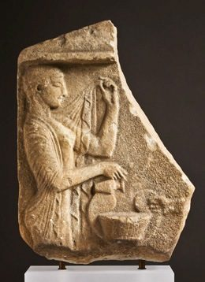

Spartan society to the Battle of Leuctra 371 BC · Lesson 14
Spartan women II: land, inheritance and marriage
What roles did adult Spartan women hold — and how far can we trust Aristotle, our main witness, about them?
Year 12 Ancient History · Section II, Option G · Present with → or space · Read on a phone with R

Connect · 3 minutes · cold call
From girls to women
Spartan women were “famous (and notorious) for being unusually independent” (Cooley) — but almost every word about them was written by men, mostly outsiders. Girls ran and wrestled (Xenophon: so they would bear strong children) and sang in choruses (Alcman). A woman’s role is what she did; her status is her standing and rights.
Adult women: who owned the land and how they got it, whom heiresses married, what marriage was for — and two places where we can still hear women, or about women, in inscriptions: Cynisca’s victory poem and the names on Spartan graves.
One key idea from Lesson 13, in one sentence.
Learning intentions and success criteria · 2 minutes
Today’s goals
- evaluate Aristotle’s evidence and judgements about Spartan women
- evaluate the evidence for women’s land ownership, inheritance and marriage
- describe the roles of women in a 5-mark answer
- separate Aristotle’s evidence (land, heiresses) from his opinions (“live wantonly”)
- explain how women came to own land, and compare Herodotus and Aristotle on heiresses
- explain the priestess/childbirth question and why the translation matters
- write a 5-mark description of women’s roles in 9 minutes
A woman’s role is what she did: bearing and raising children, running a household and estate, singing in choruses, serving the gods. Her status is her standing and rights, such as owning land. NESA’s 2020 feedback told students to focus “on the roles of women rather than privileges or status”.
Note-making · today’s routine
How to structure your notes
questions and key terms
short phrases, arrows (→ led to), abbreviations (Ar. = Aristotle, Xen. = Xenophon)
- 1Listen and look firstDon’t copy while the slide is being explained.
- 2Write your own notes at each ✎ checkpointPhrases, not sentences. Arrows for cause and effect.
- 3Compare with the model notesThey appear one row at a time. Add what you missed in a second colour.
- 4Copy each cue question into the left columnLater, cover your notes and answer the cue questions from memory.
- 5Finish with a three-sentence summaryFive checkpoints: Aristotle — evidence or opinion · land and heiresses · marriage and motherhood · Cynisca · priestesses, the grave and women’s roles.
Key vocabulary
Words you will use today
| Land and marriage | Meaning |
|---|---|
| inheritance | property passed down when its owner dies |
| dowry | property given with a daughter when she married |
| heiress | a daughter who inherited her father’s property because he had no sons |
| kyrios | a woman’s legal guardian (usually her husband or nearest male relative), who in most Greek states controlled her property |
| estate | a family’s land, farmed for Spartiates by helots |
| oliganthropia | a shortage of citizen men (Aristotle’s word) |
| Voices and memorials | Meaning |
|---|---|
| epigram | a short poem, often inscribed on a monument |
| heroon | a hero-shrine, where a remarkable dead person was honoured |
| votive | an offering dedicated to a god |
| priestess | a woman who served a god in a sanctuary and its rituals |
| emendation | a change made by a modern editor to an ancient text thought to be faulty |
| eugenics | improving a population by controlling who has children (Lesson 13) |
Spelling: Cooley’s translations use Greek forms (Kyniska, Archidamos, Agesilaos, Lakonia, Lykourgos). In your own writing use Cynisca, Archidamus, Agesilaus, Laconia, Lycurgus — Kyniska is also correct, if you are consistent.
1 · Aristotle: evidence or opinion? · We do — Source 10.4, Extract A
A hostile witness: Aristotle on Spartan women
In addition the freedom given to women is harmful as regards both the purpose of the constitution and the prosperity of the state. … This is what has happened there, since the lawgiver wanted the whole state to be tough, and in respect of the men, he clearly did so, but neglected matters concerning the women. For they live wantonly in absolutely every way, and luxuriously. As a result it is inevitable that wealth should be honoured in such a constitution, especially if they happen to be ruled by women … Since this was the case with the Lakedaimonians, many things were controlled by women in the time of their empire. … it was in this respect that the Lakonian women were most harmful, as they made clear in the attack by the Thebans. For they were no use, unlike women in other states, but created more panic than the enemy.
Aristotle, Politics 2.9, 1269b12–1270a15 (part) · written 330s–320s BC, when Sparta was, in Cooley’s words, “a second-rate power” · a philosopher based in Athens · trans. in Cooley D69
What is his verdict?
The women’s freedom harmed the state. He is explaining what went wrong with Sparta.
How does he describe them?
“Wantonly … luxuriously”: a sweeping moral attack on all women at once.
Is there anything you could test?
Influence (“many things were controlled by women”) and an event: the Theban invasion of 370/69 BC.
1 · Aristotle: evidence or opinion? · We do — Source 10.4, Extract B
The same writer on land
In addition to what has been said, one might censure the Lakedaimonians for an imbalanced distribution of wealth. For some of them have come to attain too much property, and others a tiny amount. Therefore the land has fallen into the hands of a small minority, and this through bad regulation of the laws. … And it is the case that almost two-fifths of the whole country is owned by women, since many women inherit and because of the giving of large dowries: it would have been better to draw up laws for there to be no dowry, or a small or moderate one. But as things stand one is permitted to give an heiress in marriage to whomever one wants; and if someone dies without making arrangements, then whoever he leaves as heir can give her in marriage to whomever he wishes.
Aristotle, Politics 2.9, 1270a15–29 (part) · written 330s–320s BC · trans. in Cooley D54
How much land did women own — and how did they get it?
“Almost two-fifths”, through inheritance and large dowries: specific, and probably true of his own day.
What does he want changed?
Small dowries or none: his own recommendation.
Who decided whom an heiress married?
Her father — or, if he made no arrangements, the heir he left.
1 · Aristotle: evidence or opinion? · I do — sort his words
Evidence or opinion?
| Aristotle’s words (Cooley D69, D54) | Evidence or opinion — and why |
|---|---|
| “the freedom given to women is harmful as regards both the purpose of the constitution and the prosperity of the state” | opinionhis verdict: the argument he is making |
| “For they live wantonly in absolutely every way, and luxuriously.” | opiniona sweeping, hostile judgement of all women |
| “many things were controlled by women in the time of their empire” | claim to testvague — which things? — but it suggests influence |
| they “created more panic than the enemy” | event + judgementthe Theban invasion of 370/69 BC; Xenophon also says the women “could not even endure the sight of the smoke” (Cooley E69) |
| “almost two-fifths of the whole country is owned by women” | evidencea specific figure, probably for his own day |
| “many women inherit and because of the giving of large dowries” | evidencehow the land came to them |
| “one is permitted to give an heiress in marriage to whomever one wants” | evidencea rule about heiresses (section 2) |
| “it would have been better to draw up laws for there to be no dowry, or a small or moderate one” | opinionhis recommendation |
Although Aristotle’s claim that Spartan women ‘live wantonly’ is a hostile judgement, his statement that almost two-fifths of the land was owned by women is specific evidence that women held property through inheritance and dowries.
Notes checkpoint 1 of 5
Aristotle: evidence or opinion?
Write your own notes first. Then compare, row by row, and add what you missed in a second colour.
2 · Land, inheritance and heiresses · I do
How did women come to own so much land?
Land “could not be bought and sold in Sparta, but it changed hand through inheritance, dowries and gifts” (Cooley).
Cooley (note on D54): “The large dowries were a daughter’s legal inheritance given to her at the time of her marriage.” Hodkinson suggests she inherited “half as much as her brother”.
Elsewhere a woman’s inheritance or dowry “would be held by her kyrios or legal guardian … but we have no evidence that this was also the case in Sparta” (Cooley). Unusual — “but not unique to Sparta”.
2 · Land, inheritance and heiresses · We do — two writers, a century apart
Heiresses: Herodotus and Aristotle
| Herodotus, Histories 6.57.4 (Cooley D8) | Aristotle, Politics 1270a (Cooley D54) | |
|---|---|---|
| When and who | written c. 450s–420s BC · from Halicarnassus, not a Spartan · trans. B. Wilson | written 330s–320s BC, after Leuctra · a critic of Sparta · trans. in Cooley |
| Where the rule appears | in a list of the kings’ privileges: “some legal matters over which the kings exercise sole jurisdiction” | in a complaint that “the land has fallen into the hands of a small minority” |
| If her father arranged it | she marries the man he betrothed her to (implied) | “one is permitted to give an heiress in marriage to whomever one wants” |
| If he did not | “if her father has not betrothed her to anyone, then the kings decide who is entitled to marry her” | “whoever he leaves as heir can give her in marriage to whomever he wishes” |
Did the rule change — or are Herodotus and Aristotle describing different situations?
Perhaps a change: by the 4th century a father’s heir, not the kings, chose — and Aristotle blames “bad regulation of the laws”.
Perhaps different situations: Herodotus’ kings decide “who is entitled” — a legal ruling between claimants? Aristotle describes a father, or the heir he named, choosing freely.
Either way, whoever chose her husband decided which family her land joined.
2 · Land, inheritance and heiresses · I do — so what? If time
Why women’s land mattered
Spartiate men spent “much time with the other men” at the mess and at war, so “the women probably enjoyed comparative freedom in running their household, and they needed a certain independence and the ability to control an estate” (Cooley). That would probably have included directing helot labour.
Aristotle complains that “many things were controlled by women”. Plutarch’s Gorgo, wife of King Leonidas, answers a foreign woman who says Laconian women “were the only ones to rule their men”: “Yes. But then, we are the only women who give birth to real men.”
As land gathered in fewer families, “some Spartan families failed to produce their contributions for the syssitia, and therefore lost their full citizen rights” (Cooley). Aristotle: land for 30,000 hoplites, yet “the total number was not even one thousand”.
Power — or a symptom of decline? Women’s property gave them a real economic role, but Aristotle, writing after Leuctra, links it to the shrinking citizen body. Was that cause, or just one part of a wider problem of land in a few hands?
2 · Land, inheritance and heiresses · You do · 8 minutes · press K for the timer
Your turn: annotate Source 10.4 — O, V, P, R, L
- O — he wrote after Leuctra and the Theban invasion of 370/69 BC. Why might that shape his view?
- V — find two pieces of factual evidence about land and inheritance.
- P — he is explaining why Sparta declined. Whom does he blame?
- R — highlight evidence in one colour and opinion in another. Which is more trustworthy?
- L — does this describe the 6th and 5th centuries, or only his own time?
Then draw → links to Herodotus 6.57.4 (the kings and heiresses, Cooley D8) and to Xenophon on girls (Lesson 13, Cooley D68).
O Ar., 330s–320s BC, after Leuctra; outsider in Athens; Sparta now weak · V “almost two-fifths” owned by women; inheritance + large dowries; heiress given by father or heir · P explains decline → blames the women (and the lawgiver) · R figures + rules = evidence; “wantonly”, “ruled by women” = opinion; panic = real event (Xen. E69) · L prob. his own day only; no women’s voices → Hdt: kings chose for an unbetrothed heiress · Xen.: women’s main task = “producing children”
Notes checkpoint 2 of 5
Land, inheritance and heiresses
3 · Marriage and motherhood · I do — what was marriage for?
Marriage for the state
[6] As well as this, he also put an end to the practice of men marrying whenever they chose, and instead ordained that they should marry when at the height of their physical powers, on the assumption that this too was eugenically advantageous. … [8] … Lykourgos introduced a law which gave him the right to beget children with any mother of fine children and noble birth, provided he could persuade her husband to give his consent. [9] He gave permission for many such arrangements. As a result, women like the idea of running two households …
Xenophon, Constitution of the Lakedaimonians 1.6–9 (part) · probably written in the late 390s or 380s BC · an Athenian admirer of Sparta · trans. B. Wilson · Cooley D68
An older husband could also bring in “a someone who was physically and morally admirable, for the purpose of siring children for him” (1.7). The aim throughout: strong children.
[3] Their marriages take the form of a kind of kidnapping. … [6] … he also made it perfectly acceptable for men of good standing to share children and the privilege of begetting them. … [8] Lykourgos’ motives for this were twofold: first, he did not regard children as the private property of their parents so much as the common property of the state …
Plutarch, Life of Lykourgos 15.3, 15.6, 15.8 (part) · written c. AD 100 · trans. B. Wilson · Cooley D71
Cooley: “probably married later than most girls elsewhere in Greece (late teens, rather than early/mid teens)”.
Both writers make marriage serve the state’s need for strong citizens, so motherhood was a woman’s central role — in Xenophon’s words, “the most important task for freeborn women was producing children”.
Check for understanding · Quick Check · cold call
Quick Check: land, heiresses and marriage
- What evidence does Aristotle give about women’s land, and what opinions does he add? Evidence: “almost two-fifths of the whole country is owned by women”, through inheritance and “large dowries”; heiresses given in marriage by a father or his heir. Opinions: women “live wantonly … and luxuriously”; their freedom is “harmful”; dowries should be small or none.
- Who decided whom an unbetrothed heiress married, according to Herodotus and to Aristotle? Herodotus (5th century BC): “the kings decide who is entitled to marry her”. Aristotle (4th century BC): the father, or the heir he left. Whether the rule changed or the two describe different situations is unclear.
- Why might Spartan women have managed estates more than other Greek women? Spartiate men spent much of their time at the mess and on campaign, so women “probably” ran their households and needed “the ability to control an estate” (Cooley); they could also hold land themselves.
- What reason does Plutarch give for Spartan marriage customs? For letting another man father a wife’s children, Lycurgus “did not regard children as the private property of their parents so much as the common property of the state” (15.8, Cooley D71); the secret visits “acted as a training in self control and moderation” (15.5) — written c. AD 100.
Notes checkpoint 3 of 5
Marriage and motherhood
4 · Women’s own voices · We do — Source 10.5, Extract A
A woman’s own voice: Cynisca’s victory poem
Sparta’s [kings are my]
Fathers and brothers; after winning [with a chariot of swift-footed horses]
Kyniska set up this statue. I say that I am the only woman
Out of all Greece to win the crown.
Apelles, son of Kallikles made this.
Inscription on a fragmentary black marble statue base from Olympia · after her victory in the four-horse chariot race, 396 or 392 BC · IG 5.1.1564a = IvO 160 · trans. in Cooley C55. The words in brackets are restored from a copy in the Palatine Anthology (13.16).
What does Cynisca want to be remembered for?
Her royal family, her victory, and being unique: “the only woman / Out of all Greece”.
Hodkinson: inscriptions “provide precious evidence for the voices of a few, largely wealthy, women speaking in their own words.”
4 · Women’s own voices · We do — Source 10.5, Extract B If time
Her words — and a friend of her brother’s
Surely Agesilaos did what was seemly and dignified when he adorned his own estates with possessions worthy of a man – keeping hounds and horses for warriors – but persuaded his sister Kyniska to breed chariot horses, and showed by her victory that such a stud is a mark not of manliness but of wealth.
Xenophon, Agesilaos 9.6 · a praise-biography written after Agesilaus died in 360 BC · Xenophon fought for him · trans. in Cooley C57
Also in the Platanistas (‘Plane-tree Grove’) is the heroon (hero-shrine) of Kyniska, daughter of Archidamos, king of the Spartiates. She was the first woman to breed horses and the first to win the chariot race at Olympia.
Pausanias, Description of Greece 3.15.1 · 2nd century AD · trans. in Cooley C56

How does Xenophon change the meaning of her win?
To him it proves only wealth, not manliness — and it is Agesilaus who “persuaded” her. Her own poem claims the glory.
A king’s daughter is not a typical woman. Cooley: outsiders’ views were “probably shaped by exceptional women, especially members of the royal families”.
Notes checkpoint 4 of 5
Cynisca: a woman’s own voice
5 · Priestesses and the grave · We do — Source 10.6
Who earned a name on the grave?
Those burying the body were not allowed to inscribe the name, unless the man had fallen in battle or the woman was a priestess. Mourning was limited to a brief period of eleven days.
Plutarch, Life of Lykourgos 27.2 · written c. AD 100 · trans. B. Wilson · Cooley B35b
Agippia in childbirth.
Inscribed memorial · IG 5.1.714 · probably Hellenistic, after our period (Cooley) · trans. in Cooley B55
According to Plutarch, what earned a man — or a woman — an inscribed name?
Death in battle for a man; for a woman, being a priestess.
Does the surviving evidence fit?
Spartan memorials are rare: only 24 “in war” stones are known (Cooley). Others name priests. A couple name women “in bed” — presumably in childbirth.
Why does Extract B’s date matter?
It is probably Hellenistic, so it may not show the custom of our period. Cooley thinks another, written retrograde, is earlier: “possibly classical”.
5 · Priestesses and the grave · We do — pairs · the translation matters
Priestess or childbirth?
“… or the woman was a priestess.”
Texts of Plutarch, “as for example Talbert’s translation for Penguin”, “have been changed to read as if he mentioned women dead in childbirth, rather than priestesses” (Cooley). A change like this is an emendation.
Matthew Dillon, following Hodkinson, points to a list of names from the Tainaron peninsula: seven women, “only three of whom are followed by ‘in bed’, thus showing that death in childbirth was not the reason for the names being inscribed.”
What difference does the reading make to what we think women were honoured for?
“Priestess”: honoured for a religious office. “Childbirth”: honoured for dying as a mother — a female match for death in battle. One word changes the picture of a woman’s role.

5 · Putting it together · I do — Lessons 13 and 14
The roles of Spartan women — and the evidence
“the most important task for freeborn women was producing children”Xenophon, Constitution 1.4 (D68)
Gorgo: “we are the only women who give birth to real men”; mothers urging sons to fightPlutarch, Lykourgos 14.4 (D70); Sayings of Spartan Women (F35) — late
probably, while the men were at the mess and at war; women held land through inheritance and dowriesCooley; Aristotle (D54)
girls sang and danced, as in Alcman’s Maiden-song; maidens rode in carriages at the HyakinthiaAlcman (A14); Polykrates (C69) — Lesson 13
priestesses; “Aristomacha dedicated (me) to the Eleuthia”, the goddess of childbirth; three of four named dedicators on the acropolis were womenPlutarch (B35b); C27; Hodkinson
the conquered Messenians (helots), “both they themselves and their wives”, mourned their masters; helots on estates were “probably also employed as household servants”Tyrtaeus (A6); Cooley
Role, not status: owning land is a right (status); running an estate is a role. Write about what women did.
Notes checkpoint 5 of 5
Priestesses, the grave and women’s roles
Finish your notes
Summary: three sentences
- What does Aristotle tell us about women’s land — and how far can we trust him?
- How did marriage and motherhood serve the Spartan state?
- Where can we hear women’s own voices, and what do they show?
Aristotle, a hostile critic writing after Leuctra, claims that women owned almost two-fifths of the land through inheritance and large dowries — specific evidence, probably for his own day, that we can use while discounting his attacks on their character. Xenophon and Plutarch both present marriage as serving the state’s need for strong children, so motherhood was a woman’s central role, and while their husbands were at the mess or at war, women probably ran households and estates. Women’s own voices survive only in a few inscriptions by largely wealthy women, such as Cynisca’s Olympic victory poem, while Plutarch’s rule that a woman’s name could be inscribed only if she was a priestess points to a religious role that a modern emendation to ‘childbirth’ would hide.
6 · Answering HSC questions
Today’s lesson was examined in 2020
25 marks, about 45 minutes — about 1.8 minutes a mark. 5 marks ≈ 9 minutes.
NESA: “Provide characteristics and features.”
What women did in Spartan society — not the rights and freedoms they had.
We take the question apart, read the criteria and the 2020 feedback, and you write it in 9 minutes. Then we test NESA’s sample answer against Cooley, compare a model, and you mark your own.
HSC 2020 · Section II · Question 11 (a) · 5 marks
Describe the role of women in this period.
I do — watch the question taken apart. Then you write it, in 9 minutes.
HSC 2020 Q11(a) · I do — deconstruct the question
What the question is really asking
“Provide characteristics and features”: say what women did, with a specific Spartan detail for each role. No argument is needed — but a list of words is not a description.
Roles — bearing and raising children, estates, choruses and festivals, religion, influence — not rights or privileges. And which women? NESA’s sample includes helot women as well as Spartiates.
Archaic and Classical Sparta, to 371 BC. Name late writers as late: Plutarch wrote about AD 100.
About 9 minutes · four or five roles, each with a specific detail or a named source · about 120–180 words · no introduction.
HSC 2020 Q11(a) · the marking guidelines and the markers’ feedback
What the markers rewarded
| Marks | Criteria (2020, part (a)) |
|---|---|
| 5 | Provides a detailed description relevant to the question · Communicates effectively using appropriate historical terms and concepts |
| 4 | Provides a sound description relevant to the question · Communicates using appropriate historical terms and concepts |
| 3 | Provides some description relevant to the question · Communicates using some appropriate historical terms and concepts |
| 2 | Provides some information relevant to the question · Uses some historical terms and/or concepts |
| 1 | Makes a general statement(s) relevant to the question |
use historical terms specific to Sparta appropriately and accuratelygive detail specific to Spartan women, rather than women in general and ensure the focus was on the unique role of Spartan women within Sparta’s society (a)
focusing on the roles of women rather than privileges or status (a)
“Some description” → “sound” → “detailed”: specific Spartan details, not things true of women anywhere.
Source: NESA, 2020 HSC Ancient History Marking Guidelines (Section II, part (a)) and the 2020 marking feedback for Question 11, quoted exactly.
HSC 2020 Q11(a) · You do · 9 minutes · press K for the timer
Describe the role of women in this period. (5 marks)
- roles — what women did — not rights or freedoms
- four or five roles, each with a specific Spartan detail
- at least two named sources
- helot women as well as Spartiate women
- about 120–180 words, no introduction
Start: “The central role of Spartiate women was …”
The roles slide (slide 23) is your plan.
HSC 2020 Q11(a) · Check your answer — NESA’s sample answer, tested against Cooley
NESA’s sample answer, annotated
Sample answer from the NESA 2020 HSC Ancient History Marking Guidelines · 85 words
Marker’s margin
Even sharper: one named source per role — Xenophon for children, Alcman for choruses, Aristotle for women’s land and influence, and Cooley’s “probably” for running estates.
HSC 2020 Q11(a) · a model written for this lesson, from Lessons 13 and 14
Roles, a named source for each, the hedges kept
Model written for this lesson · about 180 words, about 9 minutes
Marker’s margin
HSC 2020 Q11(a) · three answers that fall short
Why answers drop marks
Spartan women had much more freedom than other Greek women. They could own land in their own name, inherit property, exercise in public and speak their minds to men.
Rights and freedoms: what women had, not what they did. NESA asked for “the roles of women rather than privileges or status”.
Women in Sparta looked after the house and the children, helped their husbands and took part in religion.
Roles, but true of women in almost any Greek city. NESA wanted “detail specific to Spartan women, rather than women in general”.
Spartan women who died in childbirth were honoured like soldiers killed in battle: Plutarch says both could have their names inscribed.
Plutarch’s text says “priestess”; “childbirth” is a modern emendation, and the Tainaron list counts against it.
Written for this lesson to show the marking criteria — not real student answers.
HSC 2020 Q11(a) · Self-mark
Mark your own answer
Fewer than five ticks? Add the missing role in a second colour.
Cover the sources: does each sentence still say what Spartan women did? If it says what they had, rewrite it as a role.
Outline how Spartan women came to own land in this period. (4 marks)
Explain why Aristotle criticised Spartan women. (5 marks)
Practice and review · 1 of 7 · sequencing · Chapter 10 Activity A
Put these in the order they were made or written — and date each
- AAristotle’s Politics
- BAlcman’s Maiden-song
- CCynisca’s victory monument at Olympia
- DTalbert’s Penguin translation of Plutarch
- EThe bronze girl (running or dancing)
- FPlutarch’s Life of Lycurgus
- GAristophanes’ Lysistrata
Practice and review · 2 of 7 · true, false, justify · Chapter 10 Activity B
True or false? Justify with a source
- 1Xenophon says the most important task for freeborn Spartan women was spinning. False — “the most important task for freeborn women was producing children”; there were “enough female slaves to produce clothing” (D68).
- 2Alcman’s Maiden-song was written to be sung by a chorus of girls. True — Cooley: “The text proclaims itself to have been sung by a chorus of ten girls” (A14).
- 3Aristotle says that almost two-fifths of the land was owned by women. True — “almost two-fifths of the whole country is owned by women” (Politics 1270a, D54).
- 4According to Herodotus, the ephors decided whom an unbetrothed heiress married. False — “the kings decide who is entitled to marry her” (6.57.4, D8).
- 5Cynisca claimed to be the only woman in Greece to win the Olympic crown. True — “I say that I am the only woman / Out of all Greece to win the crown” (C55).
- 6In the text Cooley translates, Plutarch says women who died in childbirth could have their names inscribed. False — “unless the man had fallen in battle or the woman was a priestess” (B35b); some modern texts were changed to “childbirth”.
- 7Cooley says Sparta was the only Greek state where women could own property in their own name. False — it was “unusual in ancient Greece (but not unique to Sparta)”.
- 8Cynisca won as the breeder and owner of the horses: her monument showed a charioteer as well as Cynisca. True — Agesilaus “persuaded his sister Kyniska to breed chariot horses” (C57); the base had “chariot, horses, charioteer and a statue of Kyniska herself” (Pausanias, C52).
Practice and review · 3 of 7 · cloze · Chapter 10 Activity C, items 4–8, and three more
Fill the gaps
- Aristotle claims that almost two-fifths of the land was owned by women.
- Women gained land through inheritance and large dowries.
- According to Herodotus, the kings decided whom an unbetrothed heiress would marry.
- The king’s daughter who won the chariot race at Olympia was Cynisca.
- Changing an ancient text to ‘childbirth’ instead of ‘priestess’ is an emendation.
- Elsewhere in Greece, a woman’s property was usually held by her legal guardian, or kyrios.
- Hodkinson suggests that a daughter inherited half as much as her brother.
- Plutarch says a woman’s name could be inscribed on her memorial only if she was a priestess.
Practice and review · 4 of 7 · write an analytical paragraph · Chapter 10 Activity D
How reliable is Aristotle as evidence for the role and status of Spartan women?
Aristotle is reliable for the property Spartan women held in his own day, but much less reliable on their character. Writing in the 330s or 320s BC, he gives specific evidence: ‘almost two-fifths of the whole country is owned by women’, because ‘many women inherit’ and families gave ‘large dowries’, and a father could ‘give an heiress in marriage to whomever one wants’. These details show that women held land, which Cooley notes was unusual in Greece, and that marriage decided which family it joined. Yet Aristotle is explaining Sparta’s decline, and he blames the women, who ‘live wantonly in absolutely every way, and luxuriously’ and ‘created more panic than the enemy’ when the Thebans invaded. The second claim rests on a real event, since Xenophon also says the women ‘could not even endure the sight of the smoke’, but the first is a hostile generalisation by an outsider based in Athens, and his land figure probably describes only his own century. Aristotle is therefore valuable evidence for women’s status as property-holders in the 4th century BC, but his judgements of their behaviour tell us more about his argument than about Spartan women.
Practice and review · 5 of 7 · extended response · HSC-style, written for this lesson
Assess whether Spartan women’s ownership of land is better evidence of their power or of the decline of the citizen body. (12 marks)
Use evidence from relevant sources. Plan it in four moves:
- Thesis in your first sentence: power, decline — or both, depending on whose evidence you trust?
- Power: estates probably run by women (Cooley); “many things were controlled by women” (Aristotle, D69); Cynisca’s horse-breeding and her poem (C55, C57).
- Decline: land that “has fallen into the hands of a small minority” and women’s “almost two-fifths” (D54); land for 30,000 hoplites but “not even one thousand” men (D28); families who could not pay their mess contributions lost citizen rights (Cooley).
- Weigh the evidence: Aristotle writes after Leuctra to explain decline; Hodkinson’s half share is a modern suggestion; the figure probably describes the 4th century, not earlier.
Practice and review · 6 of 7 · Chapter 10 review, questions 1–4
Chapter review: Spartan women (1)
- What purposes did girls’ education serve, according to Xenophon, Plutarch and Cooley? Xenophon: strong mothers, “in the belief that the offspring of two strong parents would be all the more robust”. Plutarch: a strong start for their children, and mothers who could “endure labour pains more easily”. Cooley adds a second purpose: “a public education probably also ensured that the women fully subscribed to the community’s values.”
- What does Alcman’s Maiden-song reveal about girls’ choruses? It was sung by “a chorus of ten girls” (Cooley) at a religious festival, in praise of their chorus-leader Hagesichora (“Leader of the chorus”) and Agido, whose exact role is unclear. It mentions purple cloth, a golden snake and a Lydian headband, far from the austere mirage. It is late 7th-century and authentic, but damaged, and several elements “remain obscure”.
- How did girls take part in the Hyakinthia and the cult of Artemis Orthia? At the Hyakinthia, “As for the maidens, some ride in richly decorated wicker carriages, some process in racing-chariots drawn by horses” (Polykrates in Athenaeus, C69). Lead figurines from Spartan sanctuaries show “female celebrants – perhaps members of choruses” (Cavanagh); at Orthia, jewellery and lead figurines of looms suggest women dedicators (Hodkinson).
- Explain how Spartan women came to own almost two-fifths of the land. Land could not be bought or sold, so it moved through “inheritance, dowries and gifts” (Cooley). Aristotle says “many women inherit” and families gave “large dowries”; Hodkinson suggests a daughter inherited half as much as a brother. An heiress inherited her father’s property. Cooley finds no evidence that a kyrios held the land for them.
Practice and review · 7 of 7 · Chapter 10 review, questions 5–8
Chapter review: Spartan women (2)
- How did the rules for heiresses differ in Herodotus and Aristotle? Herodotus (5th century BC): if her father had not betrothed her, “the kings decide who is entitled to marry her”. Aristotle (4th century BC): a father could give her “to whomever one wants”, and if he died without arrangements, his heir chose. The rule may have changed, or the two may describe different situations.
- Describe Spartan marriage customs according to Xenophon and Plutarch, and explain their purpose. Xenophon: men married “at the height of their physical powers”; an older husband could bring in an admired man to father children, and a man could have children with another’s wife if her husband consented. Plutarch: marriage by “a kind of kidnapping”, with secret visits. Purpose: strong children for the state — “eugenically advantageous” (Xenophon); children “the common property of the state” (Plutarch, writing c. AD 100).
- Why does the translation of Plutarch, Lycurgus 27.2, matter? Plutarch’s text says a woman’s name could be inscribed if she “was a priestess”; some modern texts, followed by Talbert’s Penguin translation, change this to women who died in childbirth. The reading decides whether women were honoured for a religious office or for dying as mothers. The Tainaron list of seven women, only three “in bed”, counts against “childbirth” (Dillon, following Hodkinson).
- Evaluate the view that Spartan women were freer than other Greek women. Largely true in some respects: girls trained in public, women could hold property in their own name with no known kyrios, probably ran estates, and a few, like Cynisca, won Olympic victories as owners of racehorses. But this “freedom” served the state’s need for strong children, heiresses’ marriages were decided by fathers, heirs or kings, and the evidence comes from outsiders “probably shaped by exceptional women”. Cooley’s conclusion: their status “was indeed different from that in most other Greek states”.
Check for understanding · gesture vote · then cold call
Thumbs up, sideways or down?
“Aristotle is reliable about women’s land.”
“Aristotle is reliable about women’s character.”
Explain the difference. Then: one role of Spartan women, and one source that shows it.
Land: specific figures and rules, probably for his own day. Character: hostile judgements from an outsider explaining Sparta’s decline.
Exit ticket · before you leave
One sentence
Aristotle is more reliable about women’s ______ than about women’s ______ because …
Next lesson: the economy — did every Spartiate really hold an equal share of land, as Plutarch says, or was it, as Aristotle complains, in the hands of a few?
Sources and credits
Where everything comes from
Quoted from the translations in M. G. L. Cooley (ed.), Sparta, LACTOR Sourcebooks in Ancient History 21, 2nd edn (Cambridge University Press, 2023): Aristotle, Politics 1269b12–1270a29 and 1270a29–b6 (D69, D54, D28); Herodotus 6.57.4 and 6.71 (D8, E79, trans. B. Wilson); Xenophon, Constitution of the Lakedaimonians 1.3–9 (D68, trans. B. Wilson), Agesilaos 9.6 (C57) and Hellenika 6.5.28 (E69); Plutarch, Life of Lykourgos 14, 15 and 27.2 (D70, D71, B35b, trans. B. Wilson), Moralia 238d and 241F (B35a, F35) and Life of Agesilaos 1 (E82); Pausanias 3.15.1, 6.1.6 and the king lists of 3.7–10 (C56, C52, E4); Polykrates in Athenaeus 4.17 (C69); Tyrtaeus fr. 6–7 and Alcman fr. 1 (A6, A14, trans. K. Hughes); Cynisca’s epigram, IG 5.1.1564a (C55); memorials IG 5.1.714 (B55) and 5.1.713 (B54); Aristomacha’s dedication (C27). Cooley’s glossary, his introductions to women, wealth, the helots and the constitution, and his notes on A14, B35, C55 and D54 (with S. Hodkinson, Property and Wealth in Classical Sparta, 2000, pp. 94–103, and M. Dillon, Hermes 135, 2007, as cited there); S. Hodkinson’s introduction to the inscriptions (pp. 17–18) and W. G. Cavanagh’s ‘Introduction to Lakonian Archaeology’, both in Cooley. R. J. A. Talbert, Plutarch on Sparta (1988; 2nd edn 2005).
- Olive trees around Sparta today. In the classical period, farmland passed between Spartan families through inheritance, dowries and gifts — Bradley, Fig 3.5
- A chariot and horses on a black-figure vase: not a race, and nothing identifies it as Laconian — Bradley, Fig 3.30
- A stone relief described in Antiquity 2 as an early 5th-century BC Spartan girl in a religious rite, lifting her veil and pouring wine into a cup — Hurley et al., Source 32
Books: P. Bradley, The Ancient World Transformed (Cambridge University Press, 2014); Hurley et al., Antiquity 2, 4th edn (Oxford University Press, 2019).
Textbook images are reproduced for teaching, with the source given under each one. Drawn for this lesson: the inheritance shares (Hodkinson’s suggestion, from Cooley’s note on D54), Cynisca’s family (Cooley C55, E82), the timeline of sources and the two tables.
HSC question, marking criteria, sample answer and marking feedback: NSW Education Standards Authority, 2020 HSC Ancient History examination, marking guidelines and feedback. © NESA. NESA glossary of key words for “describe”. The other practice questions were written for this lesson.